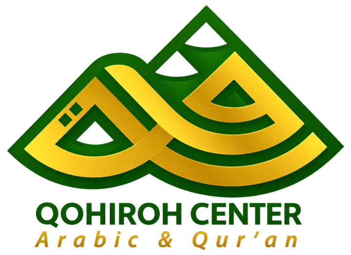

Disusun untuk pimpinan dan tim Qohiroh Center, Oktober 2026
Sistem kerja Qohiroh Center, kini dalam satu aplikasi
Pendaftaran, keberangkatan, asrama, kelas, keuangan, dan kabar untuk wali, tersusun rapi di laptop maupun di HP.


Beranda pimpinan di laptop dan halaman wali di HP. Nama dan angka di semua gambar halaman ini adalah contoh.
- Tujuh peran
- Pimpinan, petugas, pembina, guru, keuangan, wali, dan santri, masing-masing dengan layar pertamanya.
- Sembilan bagian
- Dari pendaftaran sampai rapor, dipilih sesuai kebutuhan.
- Laptop dan HP
- Aplikasi yang sama, nyaman di layar mana pun.
- Dokumen PDF
- Rapor dan kuitansi jadi dari catatan yang sudah ada.
- Identitas Qohiroh
- Logo, warna, dan font mengikuti Qohiroh Center.
Sembilan bagian yang bisa dipilih
Untuk urusan yang Qohiroh Center kerjakan sehari-hari. Tiap bagian bisa dipakai sendiri atau digabung.
-
Pendaftaran calon santri
Semua pendaftar masuk ke satu daftar, dari formulir sampai siap berangkat.
- Tahap dan progres tiap pendaftar, dengan tanda untuk yang terlalu lama belum diperiksa.
- Berkas disetujui atau ditolak, lengkap dengan alasannya.
- Pesan WhatsApp disiapkan sistem, dikirim oleh petugas.
-
Gelombang keberangkatan
Jadwal berangkat tiap kelompok rapi dan bisa dilihat pendaftar.
- Buat gelombang dengan nama, tanggal, dan kota asal.
- Pendaftar dimasukkan ke gelombangnya, jadwalnya tampil di halaman cek status.
- Visa dan paspor dipantau dari tanggal berlakunya.
-
Asrama dan pembinaan
Pembina mencatat tiap hari, wali ikut melihat hasilnya.
- Presensi sholat dan kegiatan satu asrama sekaligus.
- Setoran hafalan, prestasi, dan catatan pembinaan per santri.
- Izin keluar, uang kas, inventaris, dan masa berlaku iqamah.
-
Kelas online
Santri belajar dari HP, guru menyiapkan semuanya dari satu halaman.
- Bacaan, video, PDF, kuis, dan tugas dalam satu maddah.
- Penilaian tugas dan progres tiap santri.
- Pertemuan dengan poin penting dan asisten belajar.
-
Keuangan dan tagihan
Setiap tagihan dan kuitansi punya nomor, dan tiap perubahan tercatat.
- Tagihan untuk satu santri atau banyak santri sekaligus.
- Tunggakan diurutkan dari total terbesar.
- Koreksi dan pembatalan wajib disertai alasan.
-
Portal wali dan santri
Wali tahu kabar ananda tanpa menunggu laporan bulanan.
- Laporan 30 hari: sholat, kegiatan, dan setoran hafalan.
- Tagihan dan iqamah yang perlu diurus tampil di depan.
- Santri membuka jadwal, izin, dan kelasnya sendiri.
-
Beranda pimpinan
Kondisi lembaga dalam satu halaman, tanpa membuka banyak menu.
- Santri aktif, keterisian asrama, tagihan, dan kehadiran.
- Hal yang perlu perhatian, dikelompokkan per santri.
- Jejak audit: siapa mengubah apa dan kapan.
-
Rapor dan kuitansi PDF
Dokumen langsung jadi dari catatan yang sudah ada.
- Kop, rekening, dan penanda tangan diatur sendiri.
- Bagian yang belum ada catatannya ditulis kosong, tidak dikarang.
- Dibuat dengan warna dan font Qohiroh Center.
-
Asisten AI
Menjawab dari materi sendiri, bukan dari tebakan.
- Teman belajar santri di tiap pertemuan.
- Penjawab pertanyaan calon santri dan wali di website.
- Bantuan menyusun catatan harian pembina.
Setiap orang langsung tiba di layarnya sendiri
Begitu masuk, aplikasi membuka layar yang memang dibutuhkan orang itu.
-
Pimpinan
Angka utama dan hal yang menunggu tindakan, tanpa membuka banyak menu.
-

Petugas pendaftaran
Pendaftar yang perlu ditindaklanjuti hari ini.
-

Pembina asrama
Tugas hari ini dan ringkasan santri di asrama yang dipegang.
-

Keuangan
Tunggakan, tagihan baru, dan visa yang sebentar lagi habis.
-
Wali santri
Kabar ananda dan hal yang perlu diperhatikan.
-

Santri
Kegiatan hari ini, piket, dan materi terakhir yang dibuka.
Yang perlu ditangani hari ini, langsung kelihatan
Beranda pimpinan merangkum kondisi lembaga. Setiap butir punya tombol yang langsung membuka tempat menyelesaikannya.
- Angka utamaSantri aktif, keterisian asrama, pembina, kehadiran, tagihan, dan jumlah hal yang perlu perhatian.
- Perlu perhatianDikelompokkan per santri: visa atau paspor yang mau habis, tagihan, dan pembina yang belum mencatat.
- Daftar santriSemua santri dalam satu tabel, bisa disaring per asrama atau program.
- Jejak auditSiapa mengubah apa dan kapan, di seluruh aplikasi.

Panel Perlu perhatian di laptop. Tombolnya membuka santri atau menu yang bersangkutan.
Dari formulir sampai hari berangkat
Petugas memantau tiap pendaftar, mengabari wali, dan mengatur gelombang keberangkatan dari satu tempat.
- Daftar calon santriSatu baris per pendaftar: tahap, progres, dan tanda merah kalau terlalu lama belum diperiksa.
- Berkas dan catatanSetujui atau tolak tiap dokumen dengan alasan, dan catat tindak lanjut lengkap dengan tenggatnya.
- Gelombang keberangkatanPendaftar dimasukkan ke gelombangnya, dan jadwalnya tampil di halaman cek status.
- Kabari waliSistem menyiapkan pesan WhatsApp, petugas membacanya ulang lalu mengirim.

Jendela detail pendaftar: data diri, berkas, status, WhatsApp, dan gelombang.
Asrama dicatat tiap hari, wali ikut melihat hasilnya
Pembina cukup mengubah yang berbeda, sisanya sudah terisi. Catatan hari itu langsung muncul di halaman wali.
- Presensi satu asramaSholat dan kegiatan sekaligus. Yang belum diisi sudah terpilih berjamaah atau hadir.
- Pembinaan dan hafalanCatatan pembinaan, setoran hafalan, dan prestasi per santri.
- Izin dan pesan waliIzin keluar disetujui atau ditolak, dan pesan doa dari wali dibaca di tempat yang sama.
- Uang kas, inventaris, iqamahKas dihitung otomatis, barang asrama tercatat, dan masa berlaku iqamah dipantau.

Presensi asrama di laptop pembina.
Guru menyiapkan satu kali, santri belajar dari HP
Maddah, materi, kuis, dan tugas disusun dari satu halaman. Santri membukanya dari HP, lengkap dengan asisten belajar.
- KurikulumTambah bacaan, video, PDF, kuis, atau tugas. Materi bisa diurutkan dan diarsipkan.
- PenilaianTugas yang masuk dinilai guru, kuis dinilai otomatis, dan progres tiap santri kelihatan.
- PertemuanSantri membuka video atau kuis, membaca poin penting, lalu bertanya ke asisten belajar.


Kurikulum di laptop guru, halaman pertemuan di HP santri.
Tagihan jelas, rapor dan kuitansi langsung jadi PDF
Setiap tagihan dan kuitansi punya nomor, dan setiap perubahan tercatat. Dokumen disusun dari catatan yang sudah ada.
- Terbitkan tagihanUntuk satu santri atau banyak santri sekaligus, lalu kabari wali lewat WhatsApp.
- TunggakanDiurutkan dari total terbesar. Tagihan yang lama belum dibayar ditandai merah.
- Koreksi dengan alasanKoreksi dan pembatalan wajib disertai alasan, dan riwayatnya bisa dibuka.
- Kop sendiriNama lembaga, rekening, dan penanda tangan diatur dari menu Template.

Daftar invoice di laptop keuangan.


Kabar sampai ke rumah tanpa menunggu laporan bulanan
Wali melihat ananda dari HP. Santri melihat perkembangannya sendiri, sama dengan yang dilihat walinya.
Hal yang perlu diperhatikanTagihan yang belum lunas atau iqamah yang sebentar lagi diperpanjang.

Laporan 30 hariSholat berjamaah, kehadiran kegiatan, dan setoran hafalan.
Hari ini untuk santriKegiatan, piket, dan materi terakhir yang dibuka.

Ruang belajarMaddah, progres, dan daftar pertemuan.
Semua layar, per peran
Pilih peran, lalu pilih fiturnya. Semua gambar adalah tampilan asli dengan warna dan font Qohiroh, bukan rancangan.
Asisten AI yang menjawab dari materi sendiri
Jawabannya hanya dari isi website dan materi pengajar. Pemakaian dibatasi per jam dan per hari, dan asisten tetap menjawab dari jawaban tersimpan bila layanan AI bermasalah.
- Teman belajar santri
- Di tiap pertemuan, santri bisa minta dijelaskan lebih sederhana, minta contoh, atau minta ringkasan.
- Penjawab di website
- Calon santri dan wali bertanya soal program atau biaya. Yang perlu orang diarahkan ke WhatsApp admin.
- Bantu pembina menulis
- Pembina bercerita singkat soal hari itu, AI menyusun catatan per santri, dan pembina mengecek sebelum disimpan.
Siapa membuka apa
Menu yang muncul mengikuti peran akunnya, jadi tidak ada tombol yang berujung penolakan.
| Menu | Pimpinan | Petugas pendaftaran | Pembina asrama | Guru | Keuangan | Wali | Santri |
|---|---|---|---|---|---|---|---|
| Beranda | Ya | Ya | Ya | Ya | Ya | Ya | Ya |
| Pendaftaran | Ya | Ya | Tidak | Tidak | Tidak | Tidak | Tidak |
| Monitoring asrama | Ya | Tidak | Ya | Tidak | Tidak | Tidak | Tidak |
| Kelola asrama | Ya | Tidak | Ya | Tidak | Tidak | Tidak | Tidak |
| Kelas online | Ya | Tidak | Ya | Ya | Tidak | Tidak | Ya |
| Keuangan, visa, inventaris | Ya | Tidak | Tidak | Tidak | Ya | Tidak | Tidak |
| Kelola akun dan jejak audit | Ya | Tidak | Tidak | Tidak | Tidak | Tidak | Tidak |
| Konten website, template, pengaturan | Ya | Tidak | Tidak | Tidak | Tidak | Tidak | Tidak |
- Akses sesuai peran
- Wali dan santri hanya membuka data yang terhubung ke akunnya.
- Kata sandi
- Disimpan dalam bentuk acak, bukan apa adanya.
- Dokumen
- Paspor dan ijazah disimpan di penyimpanan privat.
- Riwayat
- Koreksi dan pembatalan tercatat: siapa, dan kapan.
Dibuat sesuai identitas Qohiroh Center
Yang Anda lihat di halaman ini sudah memakai logo, warna, dan font Qohiroh. Sisanya disesuaikan saat sistem disiapkan.

- Hijau tua
- Hijau logo
- Hijau muda
- Emas
Bricolage Grotesque untuk judul, Manrope untuk isi.
- Nama dan logo
- Nama lembaga dan logo Qohiroh Center tampil di sidebar, halaman masuk, dan dokumen PDF.
- Warna dan font
- Hijau dan emas dari logo Qohiroh, dengan font judul dan isi pilihan Qohiroh, di seluruh aplikasi.
- Istilah
- Kata seperti kloter, maddah, dan musyrif bisa diganti dengan istilah yang biasa dipakai tim.
- Kop dokumen
- Kop, rekening, dan penanda tangan di rapor dan kuitansi diatur dari menu Template.
- Data awal
- Akun tim, asrama, pembina, dan santri diisi bersama sebelum mulai dipakai.
Usulan rencana sebulan
Urutannya mengikuti cara sistem ini disiapkan sebelumnya. Waktunya bisa disesuaikan dengan kesiapan Qohiroh Center.
-
Tahap 1
Isi dan siapkan
Minggu pertama
- Akun untuk tiap anggota tim.
- Data asrama, pembina, dan santri dimasukkan.
- Ringkasan materi untuk asisten belajar.
-
Tahap 2
Uji coba bersama
Minggu kedua dan ketiga
- Tiap peran dicoba oleh orang yang nanti memakainya, dengan panduan cara pakai.
- Materi kelas online pertama diunggah.
- Masukan dicatat, lalu saya perbaiki.
-
Tahap 3
Putuskan dan mulai dipakai
Minggu keempat
- Keputusan akhir pimpinan atas lima hal di bawah.
- Hasil uji coba disahkan.
- Mulai dipakai bertahap, dari satu asrama dulu.
Lima hal yang perlu diputuskan pimpinan
Saya siapkan bahannya, keputusannya tetap di pimpinan Qohiroh Center.
- Data kesehatan
- Kapan dinyalakan. Sebaiknya bersamaan dengan kebijakan privasi yang menyebut data kesehatan dan pemakaian AI.
- Data pendaftar yang batal
- Berapa lama disimpan sebelum dihapus, misalnya 12 bulan.
- Kata sandi sementara
- Perlu masa berlaku atau tidak, dan wajib diganti saat pertama kali masuk atau tidak.
- Uji coba tiap peran
- Satu orang per peran yang mencoba dan mengesahkan hasilnya.
- Pesan ke wali
- Tetap dikirim manual lewat WhatsApp, atau otomatis. Otomatis butuh domain dan pengirim resmi.
Biaya dibahas setelah kebutuhan jelas
Halaman ini tidak memuat angka, karena hitungannya mengikuti bagian yang dipilih.
- Membangun
- Sekali, sesuai bagian yang dipilih dan seberapa banyak yang perlu disesuaikan: nama, logo, warna, istilah, dan data awal.
- Berjalan
- Domain, hosting, dan pemakaian AI. Pemakaian AI dibatasi per jam dan per hari.
- Kepemilikan
- Siapa memegang kode dan data ditetapkan tertulis di awal.
- Dukungan
- Masa perbaikan setelah mulai dipakai disepakati bersama.
Sistemnya siap disiapkan untuk Qohiroh Center
Ceritakan urusan yang paling ingin dirapikan, lalu saya tunjukkan caranya.
Balas pesan yang mengantar halaman ini untuk menjadwalkan obrolan.